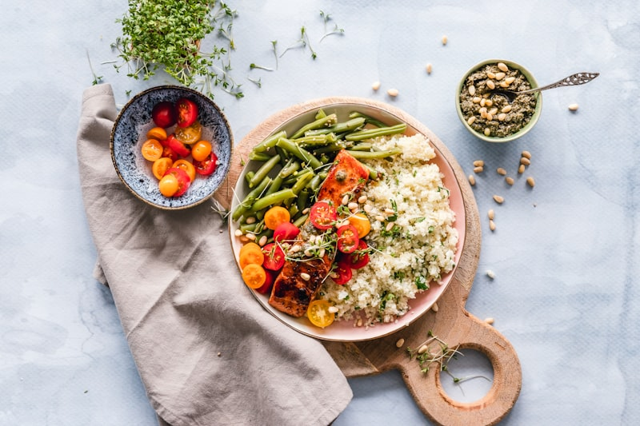
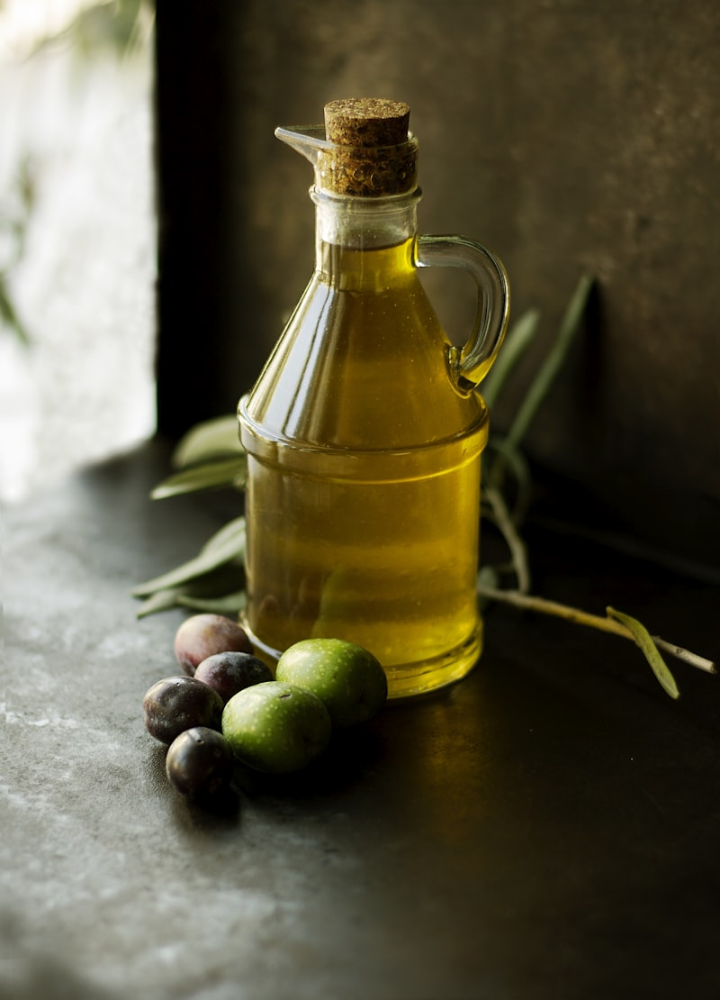

Fresh Pasta: Gluten Physics & Double-Zero Flour Hydration
An in-depth study of egg yolk fat lubrication, gluten structure stretchiness, and how double-zero flour absorbs water.
Archival Dispatches
A structured collection of technical articles on pasta dough, roasting meat, cast iron skillet seasoning, and olive oil chemistry.
An in-depth study of egg yolk fat lubrication, gluten structure stretchiness, and how double-zero flour absorbs water.

Investigating dry heat transfers, carbohydrate-amino acid browning biology, and how resting meat stabilizes juice distribution.

Analyzing unsaturated fatty acid chains, high-heat oil baking structures, and why soap does not wash away polymer layers.

Understanding flour hydration percentages, lactic acid bacteria souring, gas bubble retention, and baking stones.

Analyzing San Marzano tomato pH values, baking soda neutralizations, and herb oil infusion physics.

A detailed guide on sharpening angles (15 vs 20 degrees), steel Rockwell hardness scales, and burr removal.

Exploring raw bone roasting chemistry, collagen-to-gelatin melting temperatures, and acid vinegar boosts.

Tracing free fatty acid limits, cold extraction physics, rancidity testing, and smoke point calculations.

Understanding copper heat responsiveness, tin lining oxidation safety, and pot re-tinning protocols.

Mastering plate alignment distances, fork-to-knife orientation rules, and rustic linen fold geometries.

The chemistry of tyrosine crystals, fat coating barriers, and comparing sheep cheese against balsamic acids.

Analyzing tannin oxidation chemistry, glass surface evaporation areas, and decanting duration guidelines.